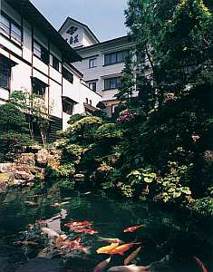
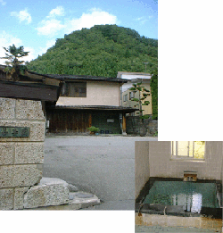

Welcome to Azumaso

Hot Springs, Onsen
Japan has many volcanoes and in Japan there are thousands of hot springs called onsen. Hot springs are classified by the type of minerals and their amount in the water. It is very relaxing to take a bath in a hot spring. For many centuries Japanese people have enjoyed going to hot spring resorts.
People usually enjoy hot springs, by staying at a traditional Japanese style inn called "ryokan". Ryokan rooms are rather simple with tatami mats and sliding paper doors called fusuma and shoji. Futons are used instead of Western style beds. Two Japanese style meals, breakfast and dinner, are served in each guest room or a big dining room.
Azumaso
Our inn, Azumaso, is one of these Japanese style inns located in Onogawa-Onsen. It is located in the northern area of Japan( Tohoku region). Clear hot spring water of Onogawa-Onsen will heal your sore muscles and stress. Besides it will make your skin really soft and smooth. That's why our hot spring is very popular especially with ladies.
The inn consists of three buildings: the main building(Azumaso), the luxurious annex(Azuma-en), and the reasonable annex for longer staying guests(Hoyo-Center). You can choose one of these for your taste and financial condition. We always serve you with heart-warming hospitality. We are looking forward to seeing you soon.
 